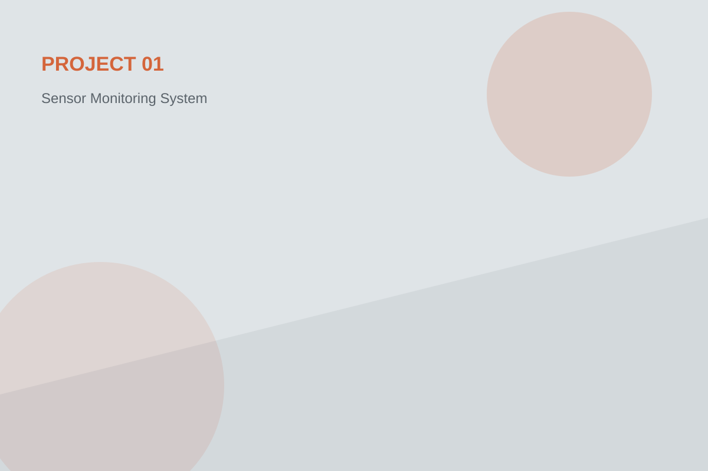
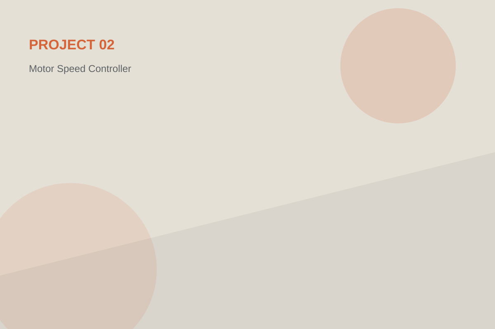
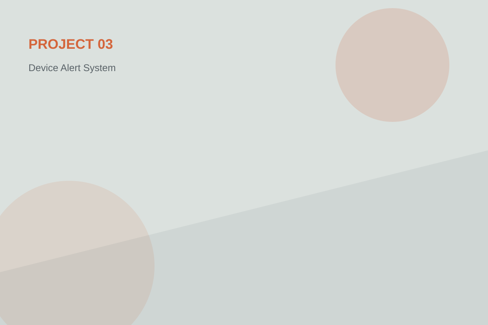
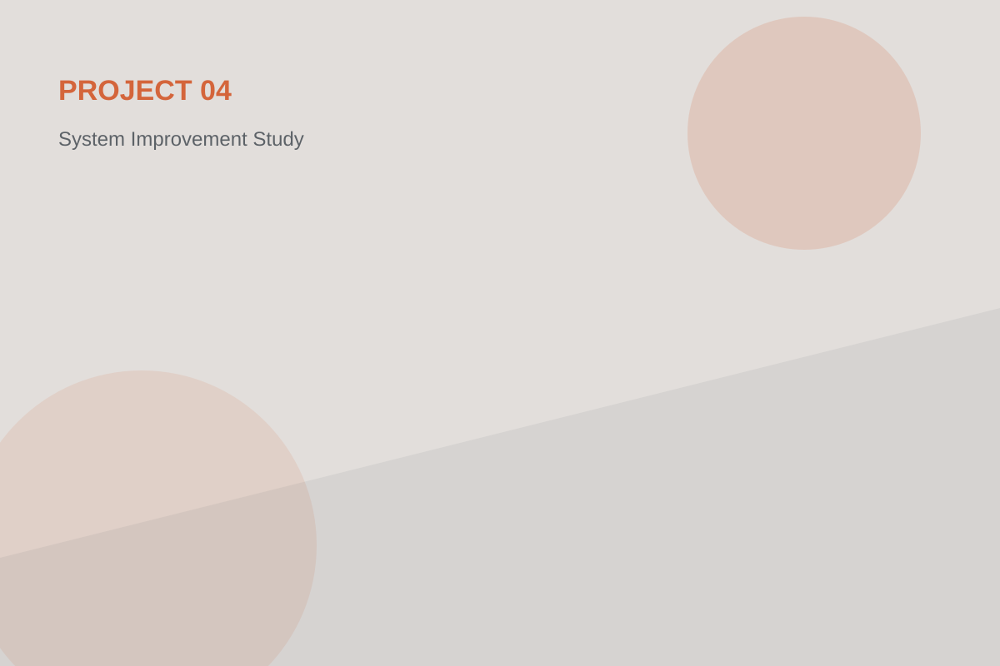

Điều khiển & tự động hóa
Tìm hiểu logic điều khiển, tín hiệu I/O, trình tự vận hành, cảm biến và cơ cấu chấp hành trong các mô hình tự động.
NGUYỄN TRẦN PHÁT MINH • ENGINEERING STUDENT
Mình quan tâm đến cách phần cứng, cảm biến, bộ điều khiển và phần mềm phối hợp với nhau để tạo nên một hệ thống hoạt động ổn định. Mục tiêu của mình là trở thành một kỹ sư có thể đi từ ý tưởng, thử nghiệm đến triển khai thực tế.
PROFILE
Mình là Nguyễn Văn Kha, một sinh viên kỹ thuật yêu thích các bài toán đòi hỏi tư duy logic và khả năng kiểm chứng bằng thực tế. Thay vì chỉ học theo công thức, mình thường cố gắng chia một hệ thống thành từng khối nhỏ để hiểu tín hiệu đi đâu, dữ liệu thay đổi như thế nào và điều gì xảy ra khi một phần tử gặp lỗi.
Mình hứng thú với các hệ thống tự động, vi điều khiển, cảm biến, giao tiếp dữ liệu và các giải pháp giúp thiết bị vận hành hiệu quả hơn.
FOCUS AREAS
Không cố biết mọi thứ cùng lúc. Mình ưu tiên xây nền tảng thật chắc ở những mảng có thể kết nối với nhau trong một hệ thống hoàn chỉnh.
Tìm hiểu logic điều khiển, tín hiệu I/O, trình tự vận hành, cảm biến và cơ cấu chấp hành trong các mô hình tự động.
Làm việc với vi điều khiển, giao tiếp ngoại vi và xử lý dữ liệu thời gian thực ở mức phần cứng gần với thiết bị.
Ghi nhận, trực quan hóa và đọc dữ liệu từ hệ thống để hỗ trợ kiểm tra trạng thái, đánh giá hiệu suất và tìm nguyên nhân bất thường.
SELECTED WORK

Xây dựng mô hình đọc nhiều cảm biến, xử lý giá trị và hiển thị trạng thái trên giao diện giám sát. Trọng tâm là cách tổ chức dữ liệu, phát hiện giá trị bất thường và đảm bảo việc cập nhật ổn định.

Thử nghiệm điều khiển tốc độ động cơ bằng tín hiệu đầu vào, đồng thời ghi nhận phản hồi để đánh giá độ ổn định của hệ thống ở các mức tải khác nhau.

Thiết kế logic theo dõi nhiều trạng thái và phát cảnh báo khi hệ thống vượt ngưỡng hoặc xuất hiện điều kiện không mong muốn.

Phân tích một quy trình có sẵn, tìm điểm gây chậm hoặc khó kiểm soát, sau đó đề xuất cách tổ chức lại phần điều khiển và theo dõi trạng thái.
JOURNEY
Điện - điện tử, lập trình, cảm biến, điều khiển và kỹ năng đọc hệ thống.
Tiếp xúc với thiết bị thật, quy trình thật và cách đội kỹ thuật xử lý sự cố.
Không chỉ hiểu lý thuyết mà có thể cấu hình, kiểm tra và cải tiến một hệ thống thực tế.
CONTACT